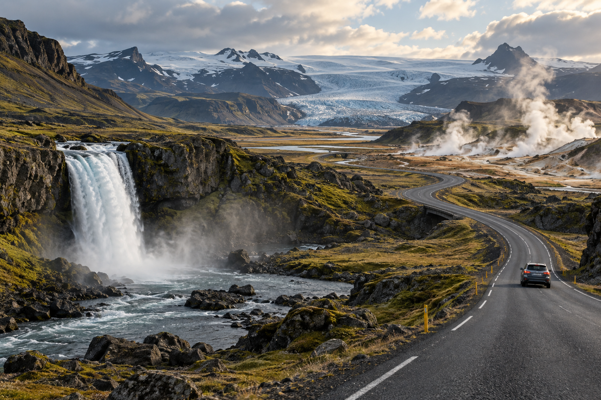
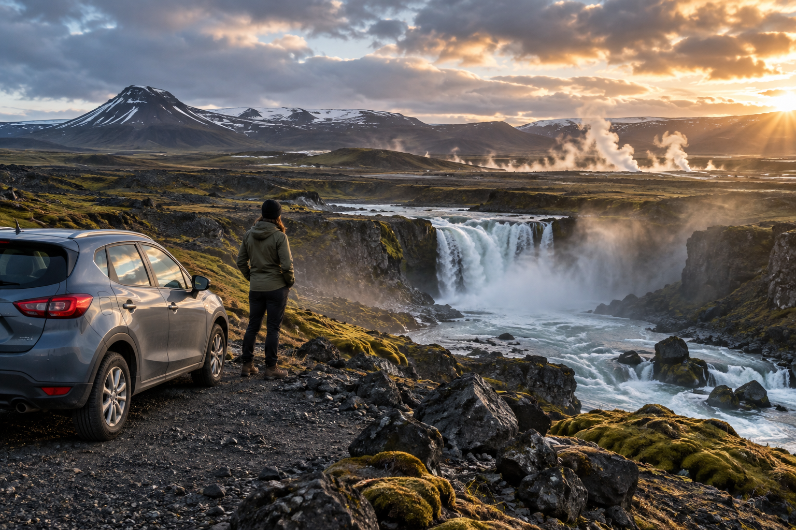
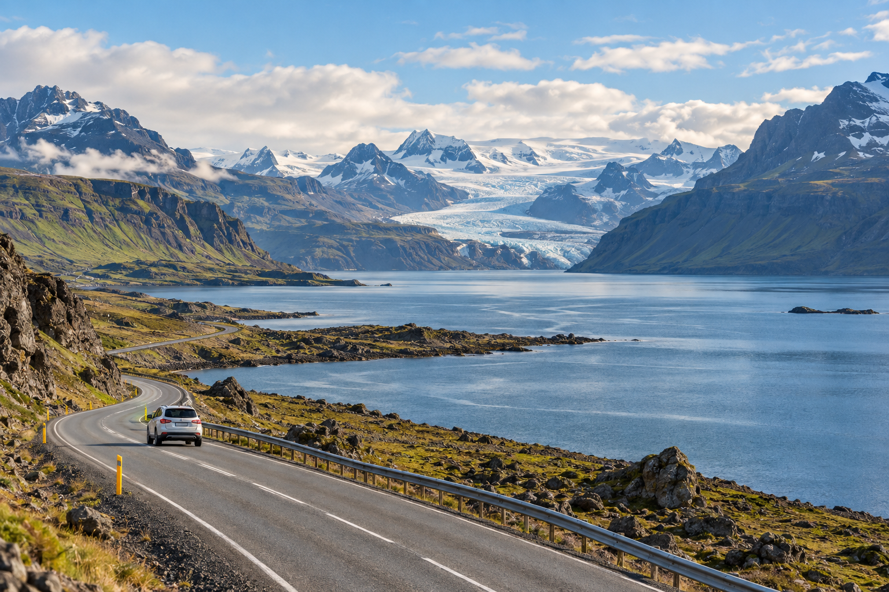

How Many Days Do You Need in Iceland
For most first-time visitors, 5 to 10 full days is the strongest range for Iceland. Five days gives you enough time for Reykjavík, the Golden Circle, and a meaningful South Coast trip. Seven days lets you slow the pace or add another region. Around 10 days is a much better starting point for a first Ring Road trip.
The right number of days depends on more than the number of attractions you want to see. Iceland's weather, driving distances, daylight, hotel locations, and road conditions all affect how much ground you can realistically cover. A route that feels comfortable in summer may need to be shorter in winter.
This guide compares 3, 5, 7, 10, and 14 days in Iceland so you can decide how long your first trip should be before choosing a detailed itinerary.
How Many Days in Iceland at a Glance?

| Trip Len gth | Best For | Realistic Scope |
|---|---|---|
| 3 days | Stopover or very short first trip | Reykjavík + Golden Circle + one focused regional day |
| 5 days | Compact first road trip | Reykjavík + Golden Circle + South Coast |
| 7 days | Balanced first trip | South Iceland in depth + optional western extension |
| 10 days | First Ring Road trip | Full Ring Road at a more realistic pace |
| 14 days | Slower full-country trip | Ring Road + more regional depth and flexibility |
If this is your first visit and you are unsure, I would start by comparing:
5 days
7 days
and:
10 days
These three durations suit the largest range of first-time trips.
First: Count Full Days, Not Hotel Nights
This is the most important calculation.
Suppose you book:
7 nights in Iceland.
That does not automatically mean:
7 sightseeing days.
If you:
- ✓Arrive late on Day 1
- ✓Fly home early on Day 8
you may have only:
6 full sightseeing days.
That difference matters.
A six-day route should not be planned as a seven-day itinerary just because you booked seven hotel nights.
Example
Day 1
Arrive at KEF at 5 PM
Days 2–6
Five complete sightseeing days
Day 7
Sightseeing until evening
Day 8
Early flight home
This gives you:
six useful sightseeing days plus an arrival evening.
Build the route from those six days.
How Much of Iceland Should You Try to See?
A first trip should not aim to cover the maximum possible distance.
The better question is:
How much Iceland can I see without turning every day into a long drive?
Iceland is spread out.
Route 1, the Ring Road, is about:
1,322 km / 820 miles
before you add:
- ✓Attractions
- ✓Detours
- ✓Hotels
- ✓Food stops
- ✓Fuel
- ✓Scenic roads
That is why trip length matters so much.
A Ring Road itinerary is not simply:
1,322 km divided by the number of days.
You are traveling to stop, walk, photograph, eat, and experience places.
Is 3 Days Enough for Iceland?
Yes, but only for a short introduction.
Three full days is enough to understand why Iceland is special.
It is not enough to explore the whole country.
A good three-day trip should stay around:
- ✓Reykjavík
- ✓Golden Circle
- ✓South or southwest Iceland
Do not attempt the full Ring Road.
What Can You See in 3 Days?
A realistic trip can include:
- ✓Reykjavík
- ✓Þingvellir
- ✓Geysir/Strokkur
- ✓Gullfoss
- ✓Selected South Coast highlights
Depending on:
- ✓Flight times
- ✓Season
- ✓Transport
- ✓Weather
you may also include part of the Reykjanes Peninsula or another focused regional experience.
Best Type of 3-Day Iceland Trip
The simplest options are:
Option A: Reykjavík-Based
Stay in Reykjavík all three nights and use:
- ✓Golden Circle tour
- ✓South Coast tour
This works especially well if you do not want to drive.
Option B: Short Self-Drive
Use Reykjavík plus one overnight outside the city if the route and season make sense.
This gives you more flexibility, but do not make the route too ambitious.
What Should You Not Try in 3 Days?
Avoid:
- ✓Full Ring Road
- ✓North Iceland
- ✓East Iceland
- ✓Westfjords
- ✓Multiple long regional detours
Trying to include them turns a short trip into a driving exercise.
Three Days Is Best For:
- ✓Stopovers
- ✓Long weekends
- ✓First taste of Iceland
- ✓Travelers combining Iceland with another destination
- ✓Visitors who prefer tours over a road trip
Three Days Is Not Best For:
- ✓Ring Road
- ✓Slow photography
- ✓Long hikes
- ✓Multiple geothermal regions
- ✓Deep regional exploration
Should You Rent a Car for 3 Days?
It depends.
Rent a Car If:
- ✓You want flexibility
- ✓Conditions are suitable
- ✓You are comfortable driving
- ✓You want to stay outside Reykjavík
Use Tours If:
- ✓It is winter
- ✓You do not want to drive
- ✓You prefer one hotel
- ✓You want easy logistics
With only three days, tours can save a lot of planning effort.
My Verdict on 3 Days
Enough for an introduction, but not enough for a broad Iceland road trip.
Keep the route compact.
The dedicated Iceland 3-Day Itinerary for First-Time Visitors will give the exact day-by-day route later.
Is 5 Days Enough for Iceland?

Yes.
For many first-time visitors, five full days is the minimum duration where Iceland begins to feel like a proper road trip rather than a short stopover.
Five days gives you enough time to combine:
- ✓Reykjavík
- ✓Golden Circle
- ✓South Coast
- ✓Vík
- ✓Possibly part of southeast Iceland
without trying to circle the entire country.
Why 5 Days Works So Well
South Iceland gives first-time visitors a huge range of scenery within one broad route.
You can experience:
- ✓Geothermal landscapes
- ✓Waterfalls
- ✓Black-sand beaches
- ✓Glaciers
- ✓Small towns
- ✓Coastal scenery
without spending every day crossing huge distances.
A Realistic 5-Day Scope
Think in broad regions:
Reykjavík
Short city time
Golden Circle
One major sightseeing block
South Coast
Several stops across one or more days
Vík
Useful overnight area
Southeast
Possible if your schedule and season allow
This is much more realistic than trying to add:
- ✓Akureyri
- ✓Mývatn
- ✓Eastfjords
on the same trip.
Can You Reach Jökulsárlón in 5 Days?
Yes, depending on how you structure the trip.
But reaching Jökulsárlón should not mean:
drive there and back from Reykjavík in one exhausting day.
A better five-day trip moves east gradually and uses overnight accommodation.
This allows you to enjoy:
- ✓Seljalandsfoss
- ✓Skógafoss
- ✓Reynisfjara
- ✓Vík
- ✓Glacier landscapes
along the way.
When Jökulsárlón May Be Too Much
You may want to stop earlier if:
- ✓Winter conditions are difficult
- ✓Your arrival and departure times reduce full days
- ✓You want a slower pace
- ✓You have young children
- ✓You want more Reykjavík time
You do not have to reach the farthest famous attraction for the trip to be successful.
Five Days in Summer vs Winter
Five days can feel very different depending on season.
Summer
Long daylight gives you more flexibility.
You can:
- ✓Sightsee later
- ✓Recover from delays
- ✓Cover longer routes more comfortably
Winter
Use shorter driving days.
You may need to:
- ✓Remove farther southeast stops
- ✓Stay closer to Reykjavík
- ✓Use organized tours
- ✓Leave more weather margin
The number of calendar days is the same.
The amount of realistic sightseeing is not.
Is the Ring Road Possible in 5 Days?
Technically, a driver could cover the distance.
That does not mean it is a good first Iceland itinerary.
I do not recommend planning your first Ring Road trip in five full days.
You would spend too much time:
- ✓Driving
- ✓Packing
- ✓Checking in
- ✓Leaving attractions quickly
and too little time experiencing the regions.
What Should You Do Instead?
Use five days for:
South and Southwest Iceland.
That gives you a much stronger first trip.
Five Days Is Best For:
- ✓First-time road trips
- ✓Couples
- ✓Families
- ✓South Coast
- ✓Golden Circle
- ✓Visitors who want variety without constant driving
Five Days Is Not Ideal For:
- ✓Complete Ring Road
- ✓Westfjords
- ✓South + North in one trip
- ✓Several major regional detours
My Verdict on 5 Days
A very good first-trip duration.
If your available time is limited, I would rather spend five well-planned days in South Iceland than rush the Ring Road.
The dedicated Iceland 5-Day Itinerary for First-Time Visitors will own the exact route.
Is 7 Days Enough for Iceland?
Yes.
One week is one of the best trip lengths for first-time visitors.
It gives you much more flexibility than five days without requiring the time or budget of a full two-week trip.
But there is an important decision:
Should you use seven days to go farther or to travel slower?
For most first-time visitors, I prefer:
slower and deeper.
What Can You See in 7 Days?
A strong seven-day trip can include:
- ✓Reykjavík
- ✓Golden Circle
- ✓South Coast
- ✓Vík
- ✓Jökulsárlón / southeast Iceland
- ✓Additional time in the southwest
You may also consider adding:
- ✓Snæfellsnes
- ✓West Iceland
if the main southern route still remains comfortable.
Why Seven Days Is Different From Five
The two extra days should not simply add:
two more famous attractions.
Use them for:
- ✓Shorter driving days
- ✓Better weather flexibility
- ✓Longer stops
- ✓Another region
- ✓A slower return
This creates a more enjoyable trip.
Should You Do the Ring Road in 7 Days?
It is possible.
But for a first visit, I would usually not make a seven-day Ring Road the default recommendation.
Why?
Because the Ring Road is about 1,322 km before detours.
Once you add major stops, the route quickly becomes much longer.
Seven days can turn into:
- ✓Constant packing
- ✓Long driving days
- ✓Short visits
- ✓Little weather margin
When a 7-Day Ring Road Might Work
It can suit travelers who:
- ✓Love driving
- ✓Visit in summer
- ✓Start early
- ✓Prefer a fast road-trip style
- ✓Accept that several regions will be brief
That is a specific travel style.
It should not be presented as the normal first-time choice.
Better Use of 7 Days
For many visitors:
Reykjavík → Golden Circle → South Coast → Southeast → optional western extension
creates a stronger trip.
You see fewer regions but experience them properly.
Should You Add Snæfellsnes?
Possibly.
Snæfellsnes can work well as a western extension if:
- ✓South Coast is already comfortably paced
- ✓You have good driving conditions
- ✓You value landscape variety
- ✓You do not mind changing accommodation
Do not add it if it forces:
- ✓Very long final drives
- ✓Rushed South Coast sightseeing
- ✓Constant hotel changes
Seven Days for Families
Seven days can be excellent for families because you can create:
- ✓Shorter driving periods
- ✓More meal breaks
- ✓Two-night stays
- ✓Pool time
- ✓Weather flexibility
You do not need to add more distance just because you have more time.
Seven Days for Photographers
Also very strong.
Instead of collecting destinations, use the extra time for:
- ✓Better light
- ✓Weather changes
- ✓Repeat viewpoints
- ✓Slower coastal stops
Iceland often rewards waiting rather than moving.
Seven Days Is Best For:
- ✓Balanced first road trip
- ✓South Iceland in depth
- ✓Families
- ✓Couples
- ✓Photographers
- ✓Travelers who prefer fewer rushed days
My Verdict on 7 Days
One of the best first-time durations.
I would use the week for a strong regional trip rather than forcing a fast full-country circuit.
The dedicated Iceland 7-Day Itinerary: One Week in Iceland will show how to structure the week without simply adding two days to the five-day route.
So Is 5 or 7 Days Better?
If you have the choice:
7 days is better.
The benefit is not only seeing more.
It gives you:
- ✓More weather margin
- ✓Shorter drives
- ✓Less pressure
- ✓More time at each stop
However, five days is still enough for an excellent first trip.
Choose 5 Days If:
- ✓Your schedule is limited
- ✓You want a compact South Iceland trip
- ✓Budget matters
Choose 7 Days If:
- ✓You want slower pacing
- ✓Weather flexibility matters
- ✓You want southeast Iceland comfortably
- ✓You may add a western extension
The Most Important Duration Rule
Do not ask:
“How many attractions can I fit into seven days?”
Ask:
“How many regions can I experience well in seven days?”
That shift creates a much better Iceland itinerary.
Is 10 Days Enough for Iceland?
Yes.
For many first-time visitors who want to drive the Ring Road, around 10 full days is a much better starting point than trying to circle Iceland in one week.
Ten days gives you enough time to move through the country's major regions while still having room for:
- ✓Scenic stops
- ✓Meals
- ✓Short walks
- ✓Weather changes
- ✓Accommodation check-ins
- ✓Occasional slower afternoons
It is still an active road trip, but it does not need to feel like a race.
What Can You See in 10 Days?
A broad 10-day Ring Road trip can include:
- ✓Reykjavík
- ✓Golden Circle or part of South Iceland
- ✓South Coast
- ✓Vík
- ✓Jökulsárlón area
- ✓East Iceland
- ✓Eastfjords
- ✓Mývatn
- ✓North Iceland
- ✓Akureyri
- ✓Western Iceland
- ✓Return to Reykjavík
That gives you a real sense of how much Iceland changes from region to region.
Why 10 Days Works Better for the Ring Road
The Ring Road itself is only the backbone of the trip.
You will constantly leave it for:
- ✓Waterfalls
- ✓Beaches
- ✓Towns
- ✓Geothermal areas
- ✓Viewpoints
- ✓Accommodation
So the real distance is greater than the official road length.
With ten days, those detours become part of the trip rather than obstacles that make you late.
What Does a 10-Day Ring Road Trip Feel Like?

Expect a trip that is:
- ✓Active
- ✓Road-focused
- ✓Geographically varied
- ✓Full of hotel changes
- ✓More demanding than a regional South Coast trip
You should be comfortable with moving most days.
This is not the best choice if your preferred travel style is:
three nights in one hotel + slow mornings + minimal driving.
In that case, seven days in two or three regions may suit you better.
Is 10 Days Enough for the Westfjords Too?
Not comfortably for most first-time visitors.
The Westfjords add substantial distance and slower roads.
Trying to combine:
Ring Road + Westfjords
inside ten days can weaken both.
For a first trip, I would normally use the ten days for:
Ring Road itself
and save the Westfjords for:
- ✓A longer trip
- ✓Another visit
Can You Add Snæfellsnes to a 10-Day Ring Road?
Possibly, but it depends on pacing.
You may be able to add Snæfellsnes if:
- ✓You keep other regions focused
- ✓Weather is favorable
- ✓You are comfortable with longer driving
- ✓You do not add several other detours
For many first-time travelers, I would prioritize a less rushed Ring Road over adding another peninsula.
Ten Days in Summer
This is one of the strongest combinations for a first Ring Road trip.
Long daylight gives you:
- ✓More sightseeing flexibility
- ✓Easier late arrivals
- ✓More room for weather delays
- ✓Better conditions for rural driving
That does not mean you should fill every evening with another attraction.
Long daylight is useful as margin, not as permission to plan 15-hour sightseeing days.
Ten Days in Winter
A full winter Ring Road requires much more caution.
Weather and road conditions may change quickly, and winter conditions can also occur in spring and autumn.
For a first winter visit, I would generally prefer:
- ✓A shorter regional route
- ✓South Iceland
- ✓Reykjavík base
- ✓Organized tours
rather than making a 10-day Ring Road automatic.
A 10-day winter trip can be excellent without circling the country.
Who Should Choose 10 Days?
Ten days is especially good for:
- ✓First-time Ring Road travelers
- ✓Couples
- ✓Road-trip lovers
- ✓Photographers
- ✓Travelers who want regional variety
- ✓Visitors comfortable changing hotels
Ten Days May Be Too Much Driving If:
- ✓You dislike packing frequently
- ✓You want several slow hotel days
- ✓Driving is stressful
- ✓You are traveling with very young children
- ✓You want long hikes almost every day
In that case, use the extra time to travel slowly in fewer regions.
My Verdict on 10 Days
The strongest starting duration for a first Ring Road trip.
It is long enough to make the circuit worthwhile without requiring a full two-week vacation.
For the exact route, keep the day-by-day schedule separate in Iceland 10-Day Itinerary: First-Time Ring Road Trip.
Is 14 Days Enough for Iceland?
Yes.
Two weeks gives you enough time to experience the Ring Road at a noticeably slower and more flexible pace.
It also gives you more options for:
- ✓Regional depth
- ✓Hiking
- ✓Weather buffers
- ✓Two-night stays
- ✓Additional peninsula trips
- ✓Slower mornings
Fourteen days changes the trip from:
“Can we complete the route?”
to:
“Where do we want to spend more time?”
That is an important difference.
What Can You See in 14 Days?
A two-week trip can comfortably include the major Ring Road regions:
- ✓Reykjavík
- ✓Golden Circle
- ✓South Coast
- ✓Southeast
- ✓East Iceland
- ✓North Iceland
- ✓Mývatn
- ✓Akureyri
- ✓West Iceland
Then you may have room for one or more additions depending on priorities.
Possible additions include:
- ✓Snæfellsnes
- ✓More Eastfjords time
- ✓More North Iceland time
- ✓Additional hiking
- ✓Extra geothermal stops
- ✓Weather-buffer time
You still do not need to add everything.
Does 14 Days Mean You Should Add the Westfjords?
Not automatically.
The Westfjords deserve proper time.
Adding them can make sense if:
- ✓Remote landscapes are a major priority
- ✓You travel during a suitable season
- ✓You are comfortable with long driving
- ✓You deliberately reduce time elsewhere
But two weeks does not mean:
Ring Road + Westfjords + Highlands + every peninsula
all fit comfortably.
Iceland remains large even on a 14-day trip.
Why 14 Days Feels Different From 10
With ten days, many travelers stay somewhere new almost every night.
With fourteen, you can use more:
two-night stays.
That matters.
A two-night base allows:
- ✓A slower morning
- ✓Weather recovery
- ✓Laundry
- ✓Hiking
- ✓Local exploration
- ✓Less packing
This can make a major difference to the quality of a road trip.
Where Should You Add Extra Days?
Do not distribute every extra day evenly.
Add time to places that match your interests.
Add More South Coast Time If You Like:
- ✓Waterfalls
- ✓Glaciers
- ✓Hiking
- ✓Photography
Add More East Iceland Time If You Like:
- ✓Fjords
- ✓Quiet towns
- ✓Scenic roads
- ✓Slower travel
Add More North Iceland Time If You Like:
- ✓Mývatn
- ✓Geothermal landscapes
- ✓Whale watching
- ✓Akureyri
Add More West Iceland Time If You Like:
- ✓Snæfellsnes
- ✓Coastal scenery
- ✓Waterfalls
- ✓Shorter final drives
Fourteen Days for Families
Two weeks can be much easier than a short Ring Road trip.
You can reduce:
- ✓Daily driving
- ✓Long back-to-back sightseeing days
- ✓Constant hotel changes
and add:
- ✓Pools
- ✓Play breaks
- ✓Earlier arrivals
- ✓Two-night stays
The extra time should improve comfort, not increase the attraction count.
Fourteen Days for Photographers
Excellent.
Weather and light can change quickly.
Extra days allow you to:
- ✓Wait for better conditions
- ✓Return to viewpoints
- ✓Spend longer in landscapes
- ✓Avoid driving only to collect locations
For photography-focused travelers, 14 days can be far more rewarding than a fast 7-day circuit.
Fourteen Days for Hikers
Also strong.
Longer hikes require time.
You cannot realistically combine:
four-hour hike + several attractions + long relocation drive
every day.
Two weeks gives you room to add hiking without making the road trip exhausting.
My Verdict on 14 Days
Excellent for a slower first Ring Road trip.
It is not necessary for every visitor, but it gives you much more freedom to absorb weather delays and explore regions instead of simply passing through them.
Visit Iceland itself presents 14 days as enough time to explore many parts of the country using the Ring Road.
Is 10 or 14 Days Better for the Ring Road?
If you have the time and budget:
14 days is better.
But ten days is enough for a strong first trip.
Choose 10 Days If:
- ✓You want the complete Ring Road
- ✓You are comfortable moving regularly
- ✓You have limited vacation time
- ✓Major highlights matter more than regional depth
Choose 14 Days If:
- ✓You want slower travel
- ✓Hiking matters
- ✓Photography matters
- ✓You prefer two-night stays
- ✓You want more weather flexibility
- ✓You may add Snæfellsnes or another region
How Many Days Do You Need for the Ring Road?
My practical recommendation is:
Under 7 Days
Do not make it your default first-trip route.
7 Days
Possible, but fast.
8–9 Days
More reasonable, but still active.
10 Days
Strong first-time starting point.
12–14 Days
Much more relaxed.
The dedicated Iceland Ring Road Guide: Route, Stops and How Long You Need will compare the route itself in detail.
Clockwise or Counterclockwise Around the Ring Road?
For trip-length planning, either direction can work.
You do not need to choose direction until you know:
- ✓Season
- ✓Forecast
- ✓Accommodation
- ✓Activities
- ✓Regional priorities
Counterclockwise
Often means starting with:
South Coast → East → North → West
This puts many famous first-time highlights early in the trip.
Clockwise
Generally means:
West/North → East → South Coast
This can save some major southern highlights for later.
Neither direction is universally better.
A Better Rule
Choose direction based on:
- ✓Current weather
- ✓Accommodation
- ✓Fixed bookings
- ✓Your highest-priority regions
Do not choose it only because one blog says:
“always drive clockwise.”
Should You Keep the Direction Flexible?
Before the trip:
yes, when possible.
Once every hotel is booked, changing direction becomes difficult.
For summer trips with tight accommodation supply, you may have to commit well in advance.
For more flexible travel periods, weather may influence your final direction.
How Season Changes the Number of Days You Need
The same route can require different pacing across the year.
This is one of the reasons there is no perfect answer to:
“How many days does Iceland need?”
Summer: You Can Use Days More Flexibly
Summer provides long daylight.
This is useful for:
- ✓Road trips
- ✓Scenic stops
- ✓Hiking
- ✓Ring Road travel
A delay does not automatically mean you finish the day in darkness.
Does Long Daylight Mean You Need Fewer Days?
Not necessarily.
You can physically cover more ground.
But that does not mean you should.
The best use of summer daylight is:
flexibility
rather than:
maximum distance.
Winter: Plan More Days or Less Distance
Short daylight and harder conditions reduce how much you can comfortably do.
For example, a five-day winter trip may cover much less distance than a five-day July trip.
That is normal.
In Winter, Prioritize:
- ✓Safer routes
- ✓Shorter driving
- ✓More weather margin
- ✓Easier hotel access
A winter trip should be measured by experience, not kilometres.
Spring and Autumn: Be Conservative
Shoulder seasons can surprise travelers because winter-like road conditions can occur outside the core winter months.
SafeTravel specifically warns that winter driving conditions can occur during:
- ✓Spring
- ✓Autumn
- ✓Winter
Keep more flexibility than you would for a midsummer trip.
For a month-by-month decision, use Best Time to Visit Iceland: Weather, Crowds and Costs.
Self-Drive vs Tours: Does It Change How Many Days You Need?
Yes.
Self-Drive Trips
A rental car lets you:
- ✓Move between regions
- ✓Stay overnight outside Reykjavík
- ✓Stop independently
This makes longer regional trips and Ring Road itineraries possible.
But driving itself consumes time and energy.
Reykjavík-Based Tour Trips
Tours work very well for:
- ✓3-day trips
- ✓5-day trips
- ✓Winter trips
- ✓Travelers who do not drive
You may spend less time managing logistics but return to Reykjavík after many excursions.
This creates some backtracking, so it is less suited to a full-country route.
How Many Days Do Families Need?
For families, I would generally choose:
more days + less distance.
A family version of Iceland should include extra time for:
- ✓Toilets
- ✓Meals
- ✓Rest
- ✓Pools
- ✓Unpredictable energy
- ✓Weather
Strong Family Durations
5 Days
Good for a compact South Iceland trip.
7 Days
Excellent for slower South Iceland.
10 Days
Can support Ring Road if children tolerate road travel well.
14 Days
Best for a relaxed Ring Road with shorter driving days.
Do not use an adult road-trip schedule and simply place children inside it.
How Many Days Do Couples Need?
Couples have a lot of flexibility.
5 Days
Strong compact road trip.
7 Days
Excellent balance.
10 Days
Great for Ring Road.
14 Days
Best for slower travel, scenic hotels, geothermal bathing, and additional regions.
For many couples visiting Iceland for the first time:
7–10 days
is a particularly strong range.
How Many Days Do Solo Travelers Need?
Trip length depends more on comfort with driving than solo status.
If you prefer not to drive:
3–5 days in Reykjavík with tours
can work extremely well.
If you enjoy solo road trips:
7–10 days
gives you far more regional freedom.
Be conservative with:
- ✓Fatigue
- ✓Remote hiking
- ✓Long driving
when there is no second driver.
How Many Days Do Photographers Need?
Usually more.
Photography changes the pace because you may want:
- ✓Sunrise/sunset conditions
- ✓Weather changes
- ✓Repeat stops
- ✓Longer viewpoints
A photographer can easily use:
10–14 days
without feeling that Iceland is slow.
Do not judge your duration using a standard sightseeing itinerary if waiting for light is part of the trip.
How Many Days Do Hikers Need?
Also more.
If you want multiple meaningful hikes, add days rather than trying to place hiking on top of a fast road trip.
Example
A normal sightseeing day might include:
- ✓Waterfalls
- ✓Beach
- ✓Drive
- ✓Hotel
A hiking day may use most of your daylight on:
one trail.
That is not an inefficient day.
The hike is the experience.
Iceland Trip Length by Travel Style
| Travel Style | Strong Starting Range |
|---|---|
| Short stopover | 3 days |
| Reykjavík + tours | 3–5 days |
| First South Coast road trip | 5–7 days |
| Slower regional trip | 7 days |
| First Ring Road | 10 days |
| Relaxed Ring Road | 12–14 days |
| Photography-heavy trip | 10–14 days |
| Hiking-heavy trip | 10–14+ days |
| Family road trip | 7–14 days depending route |
3 vs 5 vs 7 vs 10 vs 14 Days in Iceland
Here is the simplest way to choose.
3 Days
Best For
- ✓Stopover
- ✓Reykjavík
- ✓Golden Circle
- ✓One additional regional experience
Main Limitation
Very little room for long-distance exploration.
My Verdict
Good introduction.
5 Days
Best For
- ✓Reykjavík
- ✓Golden Circle
- ✓South Coast
- ✓Vík
- ✓Possible southeast extension
Main Limitation
Not enough time for a comfortable Ring Road.
My Verdict
Excellent compact first trip.
7 Days
Best For
- ✓South Iceland in depth
- ✓Southeast
- ✓Optional western extension
- ✓Slower road trip
Main Limitation
Full Ring Road becomes rushed.
My Verdict
One of the best first-trip durations.
10 Days
Best For
- ✓Ring Road
- ✓South, East, North and West
- ✓Regional variety
Main Limitation
Still an active trip with frequent hotel changes.
My Verdict
Best starting duration for a first Ring Road.
14 Days
Best For
- ✓Slower Ring Road
- ✓Hiking
- ✓Photography
- ✓Additional regions
- ✓Weather flexibility
Main Limitation
Higher overall accommodation and rental costs.
My Verdict
Best for depth and flexibility.
Which Duration Gives the Best Value?
This depends on your fixed costs.
International flights are often one of the largest expenses.
A slightly longer trip may spread that cost across more days.
But extra days also add:
- ✓Hotel
- ✓Rental car
- ✓Fuel
- ✓Food
So the longest trip is not automatically the best value.
If Budget Is Tight
I would rather choose:
5 well-planned days
than:
8 days with an overextended route and poor accommodation choices.
Is More Time Always Better?
Only if you use it properly.
A fourteen-day trip filled with:
- ✓Endless driving
- ✓Constant hotel moves
- ✓Too many activities
can still feel rushed.
More days are useful when they create:
- ✓Slower mornings
- ✓Longer stays
- ✓Better weather margin
- ✓More meaningful experiences
not merely more pins on a map.
When Should You Add Another Day to the Trip?
Add a day when it solves a real planning problem.
For example:
- ✓One drive is too long
- ✓You want a meaningful hike
- ✓Weather flexibility is poor
- ✓A region deserves another night
- ✓You want a proper Reykjavík day
Do not add a day simply to add another attraction.
When Should You Remove a Region Instead?
Remove a region when your itinerary contains several consecutive days with:
- ✓Long drives
- ✓Many stops
- ✓Late hotel arrivals
That usually means the route is too large for the available time.
Reduce geography before reducing sleep.
The Simplest First-Time Recommendation
If you have complete freedom to choose trip length:
Choose 5 Days
for a short but satisfying first trip.
Choose 7 Days
for the strongest balance of depth and manageable cost.
Choose 10 Days
if Ring Road is a major goal.
Choose 14 Days
if you want the Ring Road without rushing.
For many first-time travelers with no fixed Ring Road goal:
7 days is the sweet spot.
It gives you enough time to experience Iceland properly while keeping the trip focused.
How Many Days Do You Need for Reykjavík?
For most first-time visitors, one full day is enough for a solid introduction to Reykjavík.
You can use that time for:
- ✓Hallgrímskirkja
- ✓Central Reykjavík
- ✓Harpa
- ✓Waterfront
- ✓Old Harbour
- ✓Cafes
- ✓Restaurants
- ✓A geothermal swimming pool
If you enjoy:
- ✓Museums
- ✓Food
- ✓Nightlife
- ✓Slow city travel
then two days can make sense.
Do You Need 3 Days in Reykjavík?
Usually not if this is your first Iceland trip and the country's landscapes are your main priority.
Three city days may suit travelers who:
- ✓Do not want to drive
- ✓Are using Reykjavík as a tour base
- ✓Have strong museum or food interests
- ✓Are visiting in winter and want a slower trip
But on a normal 5- to 10-day first visit, I would generally protect more time for Iceland outside the capital.
Can Arrival Day Count as Reykjavík Time?
Often, yes.
If your flight arrives early enough, arrival day can work for:
- ✓Hotel check-in
- ✓Central walk
- ✓Dinner
- ✓Pool
- ✓Waterfront
This can reduce the need for a separate full Reykjavík day.
Do not rely on this if your flight lands late.
Can Departure Day Count?
Sometimes.
An afternoon or evening flight may leave room for:
- ✓Breakfast
- ✓Short city walk
- ✓Last meal
But do not place a major sightseeing priority on departure day.
Airport timing should come first.
Reykjavík Recommendation
For most first-time visitors:
1 full day or two partial days
is a strong starting point.
The later Reykjavík Travel Guide for First-Time Visitors will cover the city itself in detail.
How Many Days Do You Need for the Golden Circle?
For most travelers:
1 day
is enough for the classic Golden Circle.
The core route includes:
- ✓Þingvellir National Park
- ✓Geysir geothermal area
- ✓Gullfoss
The official Visit Iceland trip map currently lists the Golden Circle scenic route at roughly 250 km.
That makes it well suited to a full sightseeing day.
Can You Do the Golden Circle in Half a Day?
You can see part of it.
But rushing the complete route into a short half-day can reduce each stop to:
park → photograph → leave.
If it is your first visit, give it most of a day.
Do You Need 2 Days?
Not for the three classic sights alone.
Two days become useful if you want to add:
- ✓Slower stops
- ✓Geothermal bathing
- ✓Smaller attractions
- ✓Hiking
- ✓Rural overnight stay
For a normal first itinerary:
one day is enough.
Golden Circle Recommendation
Plan:
1 full day
for the standard route.
Use more only if you are intentionally exploring the region in greater depth.
The dedicated Golden Circle Iceland: Complete First-Time Visitor Guide will own the detailed route.
How Many Days Do You Need for Iceland's South Coast?
For most first-time visitors:
2 to 4 days
is a strong range.
The South Coast contains enough major landscapes that trying to treat it as one quick attraction creates a rushed trip.
Major areas can include:
- ✓Seljalandsfoss
- ✓Skógafoss
- ✓Reynisfjara
- ✓Vík
- ✓Glacier landscapes
- ✓Skaftafell area
- ✓Jökulsárlón
- ✓Diamond Beach
Visit Iceland describes South Iceland as a region where geothermal areas, waterfalls, black-sand beaches and Vatnajökull glacier landscapes come together.
Is 1 Day Enough for the South Coast?
For part of it.
A Reykjavík day trip can cover selected western South Coast highlights.
For example, you may reach areas around:
- ✓Seljalandsfoss
- ✓Skógafoss
- ✓Reynisfjara
- ✓Vík
depending on timing and conditions.
But one day is not enough to experience the full South Coast comfortably.
What About Jökulsárlón?
Jökulsárlón sits much farther east.
Trying to combine the full western South Coast, glacier lagoon, and return to Reykjavík creates a very long day.
For first-time self-drivers, overnight progression is usually stronger.
Is 2 Days Enough for the South Coast?
Yes, for a compact trip.
Two days gives you enough time to travel through the main western section and move farther east.
But the pace will still be active.
Three Days
Three days provides much better balance.
You have more room for:
- ✓Longer stops
- ✓Glacier-region sightseeing
- ✓Weather delays
- ✓A slower return
Four Days
Four days works well for travelers who:
- ✓Want hiking
- ✓Want guided glacier activities
- ✓Prefer slower travel
- ✓Are interested in photography
South Coast Recommendation
Use:
2 days minimum
3 days for a better first experience
and:
4 days if you want depth.
The later Iceland South Coast Guide: Waterfalls, Beaches and Glacier Stops will cover the region separately.
How Many Days Do You Need for Snæfellsnes?
For most visitors:
1 full day
can cover the main scenic loop.
Visit Iceland currently lists the Snæfellsnes scenic route at around 260 km and describes the peninsula as offering a concentrated mix of Icelandic landscapes.
That is why Snæfellsnes is often called a compact version of Iceland.
Is a Reykjavík Day Trip Possible?
Yes.
But it creates a long day once you include:
- ✓Travel from Reykjavík
- ✓Peninsula driving
- ✓Sightseeing stops
- ✓Return
For a short trip, this can still work.
Is One Night Better?
Often.
Staying on or near the peninsula can give you:
- ✓Earlier start
- ✓Later sightseeing
- ✓Less backtracking
- ✓More relaxed photography
Do You Need 2 Days?
Two days is useful if you want:
- ✓Hiking
- ✓More coastal stops
- ✓Photography
- ✓Slower exploration
For most first-time itineraries, however:
one full day or one overnight
is enough.
Should You Add Snæfellsnes to a 5-Day Trip?
Usually only if the South Coast remains comfortable.
Do not turn a strong five-day South Iceland trip into a rushed:
South Coast + Snæfellsnes + everything else
route.
Snæfellsnes fits more naturally into:
- ✓7-day regional trips
- ✓10-day trips
- ✓14-day trips
How Many Days Do You Need for North Iceland?
For a meaningful first visit:
2 to 3 days
is a good starting point.
North Iceland offers much more than one overnight stop.
Major areas can include:
- ✓Akureyri
- ✓Mývatn
- ✓Goðafoss
- ✓Húsavík
- ✓Geothermal landscapes
- ✓Coastal routes
Visit Iceland describes North Iceland as a region of valleys, mountains, lava fields, coastlines and long summer daylight.
Can You See North Iceland in 1 Day?
You can see part of it.
But if you are already completing the Ring Road, one day usually means you are passing through rather than exploring.
Two Days
Two days allows a first look at:
- ✓Akureyri
- ✓Mývatn
- ✓Selected nearby attractions
Three Days
Three days is much stronger if you want:
- ✓Mývatn in depth
- ✓Whale watching
- ✓Additional geothermal areas
- ✓Slower driving
Should You Add North Iceland to a 7-Day Trip?
Not unless North Iceland itself is one of your main priorities.
Traveling north from Reykjavík and then returning south can consume a large part of a short trip.
North Iceland fits more naturally into:
a Ring Road trip
or:
a dedicated northern trip.
How Many Days Do You Need for East Iceland?
For a Ring Road trip:
1 to 2 days
is a practical starting range.
But the east should not be treated purely as a road between:
Jökulsárlón and Mývatn.
The region includes:
- ✓Fjords
- ✓Mountains
- ✓Small communities
- ✓Coastal roads
- ✓Quieter landscapes
One Day
Possible on an active Ring Road.
Two Days
Better if you want:
- ✓Scenic detours
- ✓Smaller towns
- ✓Slower coastal travel
- ✓Less driving pressure
A 14-day trip gives East Iceland much more room than a fast 7-day Ring Road.
How Many Days Do You Need for West Iceland?
West Iceland can use:
1 to 3 days
depending on what you include.
The region contains:
- ✓Snæfellsnes Peninsula
- ✓Borgarfjörður
- ✓Waterfalls
- ✓Geothermal attractions
- ✓Historic areas
Visit Iceland currently highlights Snæfellsnes, the Silver Circle and other western landscapes as distinct travel areas.
One Day
Choose one specific western route.
Two Days
Allows a stronger Snæfellsnes or West Iceland experience.
Three Days
Useful for travelers who want:
- ✓Slower western route
- ✓More hiking
- ✓Additional rural stops
How Many Days Do You Need for the Westfjords?
The Westfjords require more time than their location on a map may suggest.
For a meaningful first visit:
3 to 5 days
is a better starting range.
Why?
Because travel can involve:
- ✓Fjords
- ✓Longer indirect roads
- ✓Remote sections
- ✓Smaller settlements
- ✓Slower driving
Visit Iceland describes the Westfjords as Iceland's isolated northwest region with sparsely populated, largely unspoiled landscapes.
The official travel map currently lists the Westfjord Way at about 950 km, which shows why this region should not be treated as a quick side trip.
Is 2 Days Enough for the Westfjords?
Only for a limited section.
It is not enough for a broad Westfjords circuit.
Three Days
Possible for a focused trip.
Four to Five Days
Much better for:
- ✓Scenic travel
- ✓Remote stops
- ✓Wildlife
- ✓Hiking
- ✓Less rushing
Should First-Time Visitors Add the Westfjords?
Usually not on a short first trip.
For:
- ✓3 days
- ✓5 days
- ✓7 days
I would normally prioritize other parts of Iceland.
For:
10 days
the Westfjords may still be too much if Ring Road is also the main goal.
For:
14 days or more
they become much easier to consider.
How Many Days Do You Need for the Full Ring Road?
For a first-time visitor:
10 days is my preferred starting point.
You can technically drive it faster.
But a short circuit often creates too much pressure.
7 Days
Possible.
Fast.
8–9 Days
Better.
Still active.
10 Days
Strong balance.
12 Days
More comfortable.
14 Days
Excellent for regional depth.
Why Ring Road Duration Is Easy to Underestimate
The road itself does not include every sightseeing detour.
Your trip also adds:
- ✓Golden Circle
- ✓Waterfalls
- ✓Beaches
- ✓Hotels
- ✓Food
- ✓Fuel
- ✓Towns
- ✓Geothermal areas
A route that looks like:
1,322 km
can become substantially longer in real travel.
Do Not Calculate Ring Road Like This
1,322 km ÷ 7 days = manageable
That ignores the reason you went to Iceland.
You are not there simply to complete the road.
Regional Time Guide
| Region / Route | Suggested Time for First Visit |
|---|---|
| Reykjavík | 1 day |
| Golden Circle | 1 day |
| South Coast | 2–4 days |
| Snæfellsnes | 1–2 days |
| North Iceland | 2–3 days |
| East Iceland | 1–2 days |
| West Iceland | 1–3 days |
| Westfjords | 3–5 days |
| Ring Road | 10–14 days overall |
These numbers are not rules.
They are planning ranges.
Your:
- ✓Season
- ✓Interests
- ✓Weather
- ✓Travel style
can change them.
How Arrival Time Changes the Number of Days You Need
Arrival time is one of the most overlooked planning details.
Imagine two travelers both book:
6 nights.
Traveler A
Arrives:
7:00 AM
Leaves:
8:00 PM
Traveler B
Arrives:
10:30 PM
Leaves:
7:00 AM
They have booked the same number of hotel nights.
They do not have the same amount of Iceland time.
Count Arrival Day as a Full Day Only When It Really Is One
Even an early flight can leave you tired.
Arrival day includes:
- ✓Immigration
- ✓Baggage
- ✓Airport transfer
- ✓Rental pickup
- ✓Food
- ✓Hotel check-in
So an early arrival is useful, but it should not automatically carry your hardest driving day.
How Departure Time Changes Your Trip
A late flight can provide useful extra time.
But departure day should remain geographically conservative.
Do not drive:
several hours from a remote region to KEF
immediately before an international flight if you can avoid it.
For an early flight, staying closer to:
- ✓Reykjavík
- ✓Reykjanes
- ✓KEF
the night before may simplify the trip.
Should You Add One Extra Night?
Sometimes one additional night can improve the entire itinerary.
Add one when it allows you to:
- ✓Break a long drive
- ✓Reach Jökulsárlón comfortably
- ✓Avoid rushing the Ring Road
- ✓Create a weather buffer
- ✓Give Reykjavík proper time
- ✓Add a two-night regional stay
One extra night can sometimes improve the trip more than adding another attraction.
Should You Remove One Night?
Yes, if:
- ✓Budget becomes uncomfortable
- ✓Car cost is too high
- ✓You are stretching a small amount of sightseeing across too many expensive days
Trip quality is not measured by length alone.
A focused 7-day trip can be stronger than a poorly planned 10-day trip.
How Many Days Do You Need if You Do Not Drive?
For a first Reykjavík-based trip:
3 to 5 days
works very well.
You can combine:
- ✓Reykjavík
- ✓Golden Circle tour
- ✓South Coast tour
- ✓Geothermal bathing
- ✓Northern Lights tour in season
What About 7 Days Without a Car?
Still possible.
You can add:
- ✓More tours
- ✓Slower Reykjavík time
- ✓Overnight guided experiences
But at that point, compare the cost and convenience of:
- ✓Tours
- ✓Car rental
- ✓Multi-day guided tour
Do not assume Reykjavík day trips are automatically the cheapest way to spend a full week.
How Many Days Do You Need in Winter?
For many first-time winter travelers:
4 to 7 days
is a strong range.
That provides time for:
- ✓Reykjavík
- ✓Golden Circle
- ✓South Coast
- ✓Northern Lights opportunities
- ✓Geothermal bathing
without requiring a full-country drive.
Why More Calendar Days Can Help in Winter
You may physically cover less ground than in summer.
But additional days give you:
- ✓Weather margin
- ✓Multiple aurora nights
- ✓Flexibility after closures
- ✓Shorter driving days
That can make seven winter days feel much more comfortable than trying to complete the same priorities in four.
How Many Days Do You Need in Summer?
Summer supports a wider range.
3–5 Days
Short southern trip.
7 Days
Excellent regional road trip.
10 Days
Strong Ring Road.
14 Days
Slow Ring Road with extra depth.
Long daylight makes travel easier, but it should not become an excuse to drive late every night.
How Many Days for a First Honeymoon or Couples Trip?
For couples who want both scenery and slower evenings:
7 to 10 days
is excellent.
That provides room for:
- ✓South Coast
- ✓Geothermal bathing
- ✓Scenic accommodation
- ✓Reykjavík dinner
- ✓Slower stops
You do not need the full Ring Road unless it is specifically part of your travel style.
How Many Days for a Family's First Iceland Trip?
For many families:
7 days
is a very strong starting point.
It allows:
- ✓Shorter drives
- ✓More meal breaks
- ✓Pool time
- ✓Two-night stays
- ✓Weather flexibility
A 10- to 14-day family Ring Road can work well if your children are comfortable with road travel.
How Many Days for a Northern Lights Trip?
Do not travel for only one night if aurora is a major goal.
Seeing the Northern Lights depends on:
- ✓Darkness
- ✓Cloud cover
- ✓Aurora activity
Several nights increase your chances of suitable conditions.
For an aurora-focused first trip:
4 to 7 nights
provides far more opportunity than a one- or two-night stop.
The dedicated Northern Lights in Iceland: Best Time, Places and Planning Tips will handle the viewing strategy separately.
How Many Days for a Photography Trip?
I would choose:
10 to 14 days
if possible.
Photography slows travel because:
- ✓Light changes
- ✓Weather changes
- ✓Stops last longer
- ✓You may revisit locations
Do not use the same duration assumptions as someone taking a five-minute photo at every attraction.
How Many Days for Hiking?
If hiking is a major trip goal, add time.
A hiking day may contain:
- ✓One major trail
- ✓Food
- ✓Travel
- ✓Rest
and very little traditional sightseeing.
That is fine.
A first-time hiking-focused trip often benefits from:
10 days or more
especially if you also want the main road-trip regions.
Build Your Duration From Priorities
Use this simple method.
Step 1: List Your Three Main Priorities
For example:
- ✓South Coast
- ✓Golden Circle
- ✓Geothermal bathing
Step 2: Add Their Realistic Time
Perhaps:
- ✓South Coast: 3 days
- ✓Golden Circle: 1 day
- ✓Reykjavík/arrival: 1 day
You already have:
5 days
before adding another region.
Step 3: Add Logistics
Include:
- ✓Arrival
- ✓Departure
- ✓Driving
- ✓Weather margin
Now you can see whether:
5 nights
actually works.
This is much more accurate than choosing trip length from a generic “Iceland in X days” list.
For the full booking sequence, use How to Plan a Trip to Iceland: Step-by-Step Guide.
Final Duration Decision Checklist
Before choosing your trip length, answer these questions.
Available Time
- ✓How many nights can I travel?
- ✓How many full sightseeing days does that create?
- ✓What time do I arrive?
- ✓What time do I depart?
Season
- ✓Am I traveling in summer?
- ✓Winter?
- ✓Shoulder season?
- ✓How much daylight will I have?
- ✓Do I need greater weather margin?
Transport
- ✓Will I rent a car?
- ✓Use Reykjavík tours?
- ✓Join a multi-day guided trip?
Geography
Which are truly important?
- ✓Reykjavík
- ✓Golden Circle
- ✓South Coast
- ✓Southeast
- ✓Snæfellsnes
- ✓North Iceland
- ✓Ring Road
- ✓Westfjords
Travel Style
Do I prefer:
- ✓Fast road trips?
- ✓Slow travel?
- ✓Hiking?
- ✓Photography?
- ✓Family-friendly pacing?
Comfort
- ✓How many hours do I enjoy driving?
- ✓How often do I want to change hotels?
- ✓Do I want two-night stays?
The answers will usually make the correct duration clear.
Common Trip-Length Mistakes
Choosing the Ring Road Before Choosing the Number of Days
Start with your available time.
Then choose the route.
Counting Hotel Nights as Sightseeing Days
They are not the same.
Treating Arrival Day as a Full Day
Flights and airport logistics reduce usable time.
Treating Departure Day as a Normal Day
Protect your flight.
Assuming Summer Daylight Removes the Need for Sleep
Long daylight helps.
It does not make a 15-hour daily itinerary sensible.
Copying a Summer Duration for Winter
Winter needs more margin and often less distance.
Thinking Seven Days Must Mean Ring Road
A regional seven-day trip can be much stronger.
Adding Snæfellsnes Because There Is One Free Day
Check the total driving first.
Adding Westfjords to an Already Full Ring Road
The region deserves its own time.
Trying to See Every Region on the First Visit
You do not need to.
Measuring Success by Distance Driven
More kilometres do not mean a better Iceland trip.
Refusing to Remove a Region
Sometimes the best itinerary improvement is deleting one area completely.
- ↗
- ↗
- ↗
Frequently Asked Questions
How many days do you really need in Iceland?
For most first-time visitors, 5 to 10 full days works very well. Five to seven days suits a South Iceland trip, while around ten days is a stronger starting point for the Ring Road.
Is 3 days too short for Iceland?
No. Three days is enough for a focused introduction around Reykjavík, the Golden Circle, and selected South Coast sights.
Is 4 days enough for Iceland?
Yes. Four days can work well for Reykjavík, the Golden Circle, and part of the South Coast, but keep the route compact.
Is 5 days enough for Iceland?
Yes. Five days is enough for a strong first South Iceland road trip.
Is 6 days enough?
Yes. Six full days gives you more breathing room on a South Coast route or allows a small additional regional extension.
Is one week enough for Iceland?
Yes. Seven days is one of the best durations for a first visit, especially if you focus on fewer regions instead of rushing the Ring Road.
Is 7 days enough for the Ring Road?
It is possible, especially in summer, but it is fast. I would normally prefer around 10 days for a first Ring Road trip.
Is 8 days enough for the Ring Road?
It can work, but the route remains active. Keep detours limited.
Is 10 days enough for Iceland?
Yes. Ten days is excellent for a first Ring Road trip or a slower multi-region trip.
Is 2 weeks too long in Iceland?
No. Fourteen days is excellent for a relaxed Ring Road, hiking, photography, and extra regional time.
Is 3 weeks too long?
No. Three weeks can work well for travelers who want slower regional travel, hiking, Westfjords, Highlands when seasonally appropriate, or fewer daily hotel changes.
How long should I spend in Reykjavík?
For many first-time visitors, one full day or two partial days is enough.
How long do you need for the Golden Circle?
One full day is enough for the classic route.
How long do you need for the South Coast?
Two days is a practical minimum, while three to four days gives you more depth.
How long do you need for Snæfellsnes?
One full day can cover the main loop, but one overnight or two days allows a more relaxed experience.
How many days do you need in North Iceland?
Two to three days is a strong starting point.
How many days do you need for the Westfjords?
Three to five days is a much better starting point than trying to add the region as a quick detour.
How many days do you need for the Ring Road?
Around 10 days is a strong first-time target. Twelve to fourteen days provides a more relaxed experience.
How many days in Iceland without a car?
Three to five days works well for a Reykjavík-based trip with organized tours. A week can also work with more excursions or guided multi-day trips.
How many days should I spend in Iceland in winter?
Four to seven days works well for many first-time winter visitors because it provides time for Reykjavík, southern routes, geothermal bathing, and several possible Northern Lights nights.
How many days should I spend in Iceland in summer?
Anywhere from five to fourteen days can work well. Seven days is excellent for a regional trip, while ten or more days supports a stronger Ring Road itinerary.
Is Iceland worth visiting for only 2 days?
Yes, if that is all the time you have. Treat it as a stopover and focus on Reykjavík plus one major route or experience rather than trying to cover several regions.
Is it better to have 5 or 7 days in Iceland?
If time and budget allow, seven days is better because it provides more weather margin and less pressure. Five days can still be an excellent compact first trip.
Is it better to have 7 or 10 days?
Choose seven days for a focused regional trip. Choose ten if the Ring Road is a major goal.
Is it better to have 10 or 14 days?
Ten days is enough for a strong Ring Road trip. Fourteen is better if you value slower travel, hiking, photography, and two-night stays.
Should I spend more days in Reykjavík or outside the city?
For most first-time visitors focused on Iceland's landscapes, spend more time outside Reykjavík.
Can I see all of Iceland in one trip?
You can see many major regions on a longer trip, but even two weeks does not mean you need to cover every peninsula, Highland route, Westfjord, hike, and attraction.
Conclusion
For most first-time visitors, 5–10 full days is the best range for Iceland: choose five days for a compact Reykjavík, Golden Circle and South Coast trip, seven days for a slower regional experience, around ten days for a first Ring Road circuit, and fourteen days when you want more depth and weather flexibility. Count real sightseeing days rather than hotel nights, match your distance to the season, and remove regions before turning every day into a long drive.